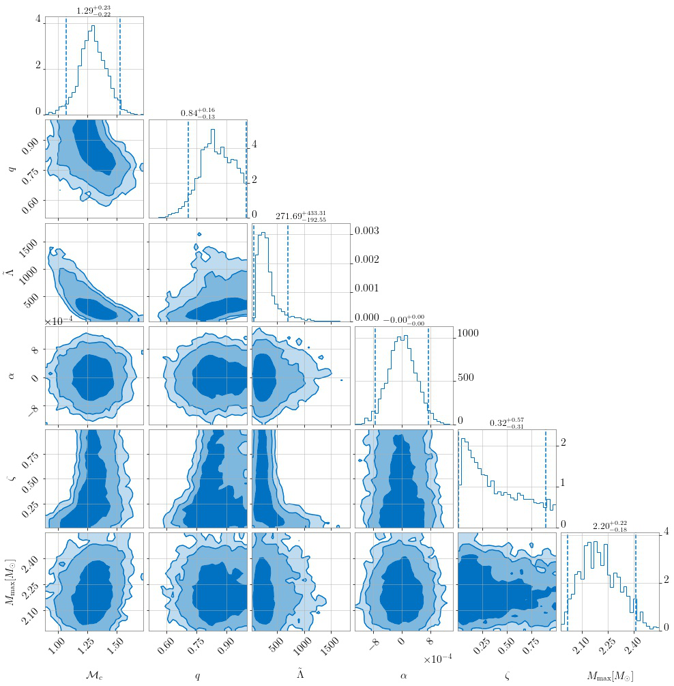

Connecting Electromagnetic signals to Binary Source Properties
In NMMA, it is possible to use the results from GW inferences together with kilonova inferences or joint KN+GRB afterglow inferences to get estimates on the binary properties. A binary system can be a binary neutron star (BNS) merger or a neutron-star-black-hole (NSBH) merger. We can connect observed electromagnetic signals to potential source properties via phenomenological relations, i.e., via fits based on numerical-relativity relations, see (Pang et al. 2022) and Refs. therein for further details.
For estimating the source properties, the following input files are required:
EMsamples- is the posterior sample file from a previous Bayesian inference (e.g. Kilonova+GRB inference) on electromagnetic (EM) signals,EMprior- is the prior file that was used for the EM inferenceEOS- number of equation of state files which will be used in the resamplingEOSpath- path to the folder of all EOS filesGWsamples- some fiducial randomly generated posterior samples for masses, chirp mass, mass ratio, luminosity distance, and EOS samples,GWprior- a prior file for gravitational wave sources
Estimating BNS properties
Here, we take the observed gamma-ray burst GRB211211A as an example and assume that associated electromagnetic signals
originated from a BNS merger. For this signal, a joint inference (kilonova + GRB) can be carried out and will provide you with the required EMsamples.
For the GWsamples input file, we need to generate some fiducial dummy GW samples. A script for the generation can be found here.
The GW sample generation is based on the EOS set 15nsat_cse_uniform_R14 which can be found on Zenodo.
The EMprior file is the same as used for the KN+GRB inference (see priors) and the GWprior file should be adjusted to the GWsamples.
Finally, we can use this command:
gwem_resampling --outdir outdir --GWsamples example_files/tools/gwem_resampling/GWsamples.dat --GWprior priors/GWBNS.prior --EMsamples example_files/tools/gwem_resampling/GRB211211A_posterior_samples.dat --EOSpath 15nsat_cse_uniform_R14/macro/ --Neos 5000 --EMprior priors/Bu2019lm_TrPi2018GRB211211A.prior --nlive 1024
The result will be a posterior file containing information on:
the chirp mass $\mathcal{M}_c$,
mass ratio \(q\),
Tidal deformability $\tilde{\Lambda}$,
dynamical ejecta mass error \(α\),
dynamical ejecta mass fraction \(ζ\), and
equation of state EOS
A corner plot is shown below:

Estimating NSBH properties
In order to estimate the properties of a NSBH system, you need to adjust the GWsamples and GWprior file accordingly and run the resampling
with the argument withNSBH (otherwise, you will run for a BNS system).
gwem_resampling --outdir outdir --GWsamples example_files/tools/gwem_resampling/GWsamples_NSBH.dat --GWprior priors/GWNSBH.prior --withNSBH --EMsamples example_files/tools/gwem_resampling/GRB211211A_NSBH_posterior_samples.dat --EOSpath 15nsat_cse_uniform_R14/macro/ --Neos 5000 --EMprior priors/Bu2019nsbh_TrPi2018_GRB211211A.prior --nlive 1024